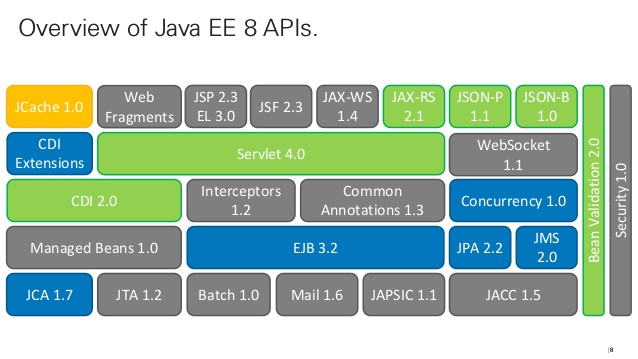
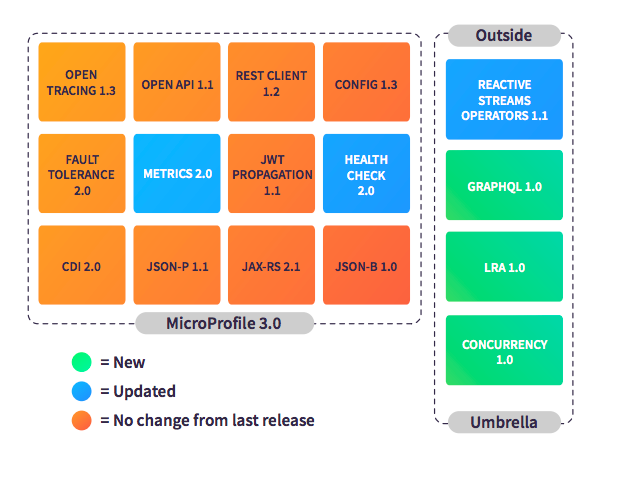

Programación de Aplicaciones Telemáticas
Tema 6: Especificacion Servlet
Agenda
Sessión 1
- Introducción
- ¿Que es Java EE?
- ¿Que es un Java Servlet?
- Ciclo de vida de un Java Servlet
- Contenedores de applicaciones
- Escenarios de uso de Java en servidor
Introducción

Introducción

¿Que es Java EE?
¿Que es Microprofile?
¿Que es un Java Servlet?
A Jakarta Servlet (formerly Java Servlet) is a Java software component that extends the capabilities of a server. Although servlets can respond to many types of requests, they most commonly implement web containers for hosting web applications on web servers and thus qualify as a server-side servlet web API.
Introducción

public class HelloWorld extends HttpServlet {
public void init() throws ServletException {}
public void doGet(HttpServletRequest request, HttpServletResponse response)
throws ServletException, IOException {
response.setContentType("text/html");
PrintWriter out = response.getWriter();
out.println("Hello World");
}
public void destroy() {}
}
Contenedores de applicaciones

Contenedores de applicaciones
.war files
Escenarios de uso de Java en servidor
- Desarrollo de aplicaciones Web
- Desarrollo de API
- Desarrollo de sistemas Event-Driven
- Desarrollo de sistemas Reactivos